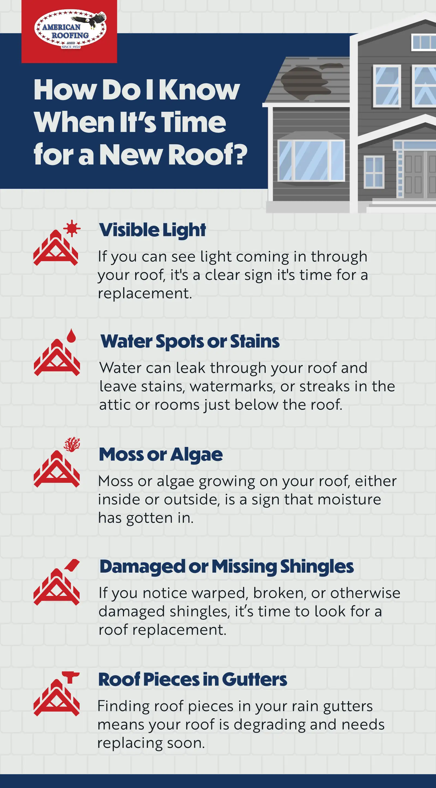

Your roof is one of the most important parts of your home, especially in the face of Utah’s severe winters. It serves as a protective barrier from the elements while ensuring your comfort by sealing in warmth during the winter and preserving cool air in the summer. Your roof needs to be strong and undamaged, or it could result in destructive leaks and expensive repairs.
How do you know when it’s time to get a new roof though? We’ll help you understand how long a roof lasts, if you need a permit for roof replacement, and what it takes to replace a roof in Utah.
How Long Do Roofs Generally Last in Utah?
A roof can last anywhere from 15 to 50 years. The lifespan of any roof depends on the quality of the materials used and, of course, the climate and weather the roof is exposed to. The lifespan may also be affected by how well it is maintained and how often debris like leaves or tree branches is cleared off of it.
Roofing Materials
There are many factors to consider when choosing a roof: materials, climate, budget, aesthetic, etc. And the materials you choose have a huge impact on the longevity of your roof.
Some of the most common roofing materials are:
1. Asphalt Shingles: These last anywhere from 15 to 30 years
2. Fiberglass Shingles: These last between 15 to 30 years
3. Wood Shingles: These last between 15 and 30 years.
4. Metal Sheeting: These can last between 20 and 50 years.
Weather and Climate
Climate and weather can have a huge impact on your roof’s lifespan. Some climate and weather factors that contribute to wear and tear on your roof are:
1. High heat and direct, prolonged UV rays
2. Sustained below-freezing temperatures throughout the year
3. Regular violent storms accompanied by hail or high winds
4. Consistent rain and snowfall year over year
How Do I Know When It’s Time for a New Roof?
Most roofs in Utah need to be replaced every 20 years, but if you’ve only recently moved to a new home and don’t know how long the existing roof has been in place there are other signs you can look for.
1. Visible Light
If you can see light coming in through your roof, it’s an obvious sign that you need your roof replaced.
2. Water Spots or Stains
Water can leak or seep through your roof during rainy or snowy weather. When this happens, you’ll often see stains, watermarks, or streaks in the attic or other rooms right under the roof.
3. Moss or Algae
If you spot moss or algae growing on your roof, either inside or outside, it’s a sign that moisture has penetrated the roof.
4. Damaged Shingles
When you can see warped, broken, or otherwise damaged shingles, you must start looking for a company that can replace your roof.
5. Roof Pieces in Gutters
The last sign you may need a new roof is if you find pieces of your roof in your rain gutters. This means your roof is degrading and needs to be replaced soon.

Do I Need a Permit for a Roof Replacement in Utah?
In Utah, you must have a purchased permit from the Greater Salt Lake Municipal Services District to build, replace, or reshingle a roof.
When Is the Best Time to Replace a Roof?
Many people wonder when is the best time of year to replace their roof. Most construction or roofing companies prefer to work on roofs during summer or other periods of warmer weather. This ensures that they don’t have to deal with rain or snow hindering the roof replacement, damaging their materials, or damaging your property.
However, it can be cheaper if you hire a company to work on the roof in the off-season because of supply and demand for labor. You just need to understand that you are taking a risk that rain or snow could damage your home while the roof is compromised.
How Much Does it Cost to Replace a Roof?
The costs of a roof in Utah vary greatly, anywhere from $4,000 to $30,000, depending on:
1. The size of your roof
2. What roofing materials you decide to use (shingles are usually the most affordable option)
3. Who you hire to build or repair the roof, and how much they charge
Tips For When You’re Getting Ready to Replace Your Roof
When you are considering a roof replacement, there are some helpful things you need to keep in mind.
Never let a company start working on your roof without signing a contract first. This will protect both parties and ensure your roofing company doesn’t try to change their prices halfway through.
Make sure your contractor has a current license. An expired license could lead to legal issues.
Meet with a few different contractors and get multiple bids so you know the average prices for your job and can pick the most competitive prices.
If the roofers encounter any damages or other issues that need more attention and will increase costs, ensure you have a “change order,” which will ensure you know what you are paying.
Find out if the contractors will clean up when they’re done. Some don’t, and you may end up with a mess and debris you will need to take care of.
American Roofing Can Help You When You Need a Roof
Getting a new roof doesn’t happen often, so when it does, you must choose a roofing company that will do the job right. American Roofing Company (AMCO) is a local Utah roofing company with years of experience. Not only do we know how to install a high-quality roof quickly, but we also are experts in obtaining the proper permits and licenses.
When it’s time to replace your roof, AMCO is the best and safest decision for you and your home. Contact us today for a free custom quote.